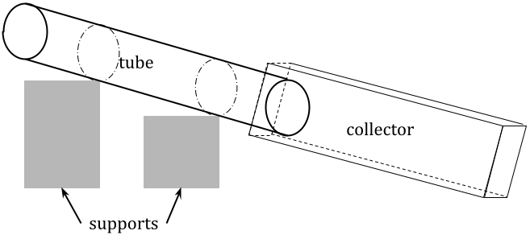

Viscosity is a measure of the resistance of a fluid to flow, or of the effect of applied stress on its motion. Dynamic or absolute viscosity is an intrinsic property of a substance, dependent on temperature: as a liquid gets colder, its viscosity increases; the opposite is true for gases, meaning a substance’s minimum viscosity is at its boiling point. There is no general equation for viscosity in terms of other intrinsic properties, but there are many ways to determine it experimentally, resulting in the units of Pa·s, or poise (P) where 1 cP = 1 mPa·s. In some applications the preferred metric is kinematic viscosity, defined by , or absolute viscosity divided by density, and measured in m2/s, or stokes (St) where 1 St = 1 cm2/s. In non-technical terms, a more viscous fluid is “thicker,” and therefore moves more slowly, but I wanted to know the quantitative relationship: how does viscosity affect flow rate?
In an open container that is much wider than it is deep and has a constant depth and a downward slope, such as a wide river, the flow of liquid through it can be modeled by layers of liquid with increasing speeds as they go up. With a derivation too long and complicated to repeat, the equation that represents the total flow rate is , where g is gravitational acceleration, w is the width, h is the constant depth, θ is the downward angle of the container, and ν is the kinematic viscosity of the fluid. (There is another, more popular equation for flow rate in terms of viscosity, , but it only applies when the motion of the fluid is caused by a difference in pressure.) This investigation seeks to empirically confirm this relationship by creating many small rivers with varying viscosities.
Set up a system that models the flow of liquid in a river with a tube. The example shown in figure 1 is a rough sketch of my setup, but there are other ways to make this work.
figure 1: diagram of setup
In this system, a tube or pipe, longer than it is wide, is suspended by supports (I used books) and secured to them so it will not move around (I used masking tape for this). At the bottom end of the tube is some container to collect the fluid after it flows through the tube in order to conserve materials and prevent messes. Record the heights of two or more points on the tube and the distance(s) between them, which will be treated as constant (I chose the attachment points as well as the two endpoints of the tube).
Gather approximately 100 mL of each of seven liquids with distinct viscosities. For each, conduct at least three trials of pouring it into the top of the tube (I used a 100 mL graduated cylinder to do this) and letting it flow to the bottom. Measure the amount of time from the start of pouring until the end of the main flow of liquid, at which point it will no longer behave like a river (exactly how this is defined is not so important as long as it is consistent across trials). Record also, between trials, how much of the liquid remains, to see if there might be patterns that could skew the data (for example, I used two alcohols, which evaporate at room temperature, so a substantial amount was lost over the course of the trials).
Between trials involving different liquids, rinse out all dirty containers and equipment (including the tube if necessary) to prevent cross-contamination. When the experiment is complete, rinse out equipment again for storage, and clean up any spilled liquid in the lab area.
Table 1 shows the data collected over three data-collection sessions, time for the liquid to flow down the tube and the volume of liquid used for each trial.
table 1: raw data
| substance | time (s ± 0.01) | ||||
|---|---|---|---|---|---|
| A | B | C | D | E | |
| water | 3.95 | 2.80 | 2.55 | 3.40 | 2.34 |
| ethanol | 3.15 | 2.27 | 3.66 | 3.20 | 2.86 |
| isopropyl alcohol | 4.14 | 4.00 | 3.26 | 2.93 | 2.54 |
| mineral oil | 16.28 | 36.24 | 22.34 | 24.85 | 14.34 |
| vegetable oil | 29.88 | 23.44 | 28.61 | 27.64 | 25.11 |
| syrup | 142.62 | 101.47 | 117.02 | 104.03 | |
| molasses | 1077 | ||||
| substance | volume (mL ± 0.5) | ||||
| A | B | C | D | E | |
| water | 100 | 99 | 99 | 98 | 98 |
| ethanol | 77 | 74 | 71 | 70 | 69 |
| isopropyl alcohol | 88 | 86 | 82 | 81 | 79 |
| mineral oil | 71 | 52 | 49 | 42 | 41 |
| vegetable oil | 69 | 69 | 65 | 68 | 68 |
| syrup | 93 | 93 | 92 | 92 | |
| molasses | 93 | ||||
There is substantial variation among the volume values for some of the substances, due to evaporation in the case of alcohols or sticking to the tube and other equipment in some cases. As I was recording the data I noticed that these patterns did not always align to the trends in the time data and did not conform to my prior expectations in some cases (e.g., syrup is stickier than mineral oil, but little was lost over the trials).
In order to quantify the independent variable—different substances—I found reference values online for both absolute and kinematic viscosities for the seven substances I used, shown in table 2. Uncertainty is considered to be 0 for all of these because they are reference values.
table 2: viscosity values
| substance | absolute viscosity (cP) | kinematic viscosity (cSt) |
|---|---|---|
| water | 1.0 | 1.00 |
| ethanol | 1.2 | 1.52 |
| isopropyl alcohol | 2.4 | 2.80 |
| mineral oil | 143 | 162 |
| vegetable oil | 72 | 78.2 |
| syrup | 200 | 150 |
| molasses | 10000 | 7020 |
Additionally, in order to calculate the angle at which the liquid is flowing, I measured the heights of four points on the tube and the distances between them at each data-collection session, as shown in table 3.
table 3: measured dimensions of setup
| session | top of tube (cm ± 0.1) | bottom of tube (cm ± 0.1) | high support (cm ± 0.1) | low support (cm ± 0.1) |
|---|---|---|---|---|
| #1 | 22.8 | 10.0 | ||
| #2 | 22.2 | 7.5 | 20.2 | 9.5 |
| #3 | 19.9 | 7.5 | 18.1 | 9.1 |
| session | length of tube (cm ± 0.1) | distance between supports (cm ± 0.1) | ||
| #1 | 59.7 | |||
| #2 | 60.6 | 36.0 | ||
| #3 | 60.2 | 38.3 | ||
I did not record some of this information for the first session, but I will still be able to find the angle of the tube. Additionally, the tube has an inner radius of 4.0 ± 0.1 cm.
The equation that models this experiment uses flow rate, or volume per unit time, so our first step is to calculate flow rate from the volume and time data in table 1. Uncertainty in these values will be calculated in the next section.
table 4: flow rate by trial
| substance | flow rate (mm3/s) | average flow rate (mm3/s) | ||||
|---|---|---|---|---|---|---|
| A | B | C | D | E | ||
| water | 25300 | 35400 | 38800 | 28800 | 32100 | |
| ethanol | 24400 | 32600 | 19400 | 21900 | 24100 | 24500 |
| isopropyl alcohol | 21300 | 21500 | 25200 | 27600 | 31100 | 25300 |
| mineral oil | 4360 | 1440 | 2190 | 1690 | 2860 | 2510 |
| vegetable oil | 2310 | 2940 | 2270 | 2460 | 2710 | 2540 |
| syrup | 652 | 917 | 786 | 884 | 810 | |
| molasses | 86.4 | 86.4 | ||||
Graphing these average flow rates against the viscosity values in table 2 results in the graph in figure 2, shown on a log scale so all the points are visible. The length of each error bar in the vertical direction is the semi-range of the values from which the average was taken.
figure 2: graph of raw data
The equation we expect this to reflect is . Q is flow rate, and ν is kinematic viscosity, so we can write our equation as · . Therefore, we should expect the graph to be inversely proportional with a coefficient of . In order to confirm this, we begin by graphing the curve of best fit for the data, shown in figure 3.
figure 3: graph of data with best-fit line

Though we would ordinarily expect an inverse relationship to have a curved graph, on a logarithmic graph it is just a line with negative slope. According to the linear regression used to find this line, that coefficient, the constant product of the two variables, is approximately 126 000 mm5/s2. We now want to know what this number means; the first thing to do is calculate the angle θ.
In fact, though, we do not need to calculate θ because the equation only has , and we can find this using right triangles. As shown in figure 4, the sine of the angle is “opposite over hypotenuse,” or the difference in height between any two points on the tube divided by the length between them along the tube.
figure 4: angle of elevation in a right triangle
From this we can discern three values for , for the three data-collection sessions, using the data in table 3. For the first, we use the two ends of the tube as our points, getting . For the other two, we have two values each, which we expect to be the same.
#2: and
#3: and
Since we want to be a constant, we will have to average these to find a single value; this approach is not perfect, but it will be close enough to show the pattern we want. The average of these five values is about 0.248.
This makes our equation now . We can also substitute in the known value g = 9.81 m/s2 = 9810 mm/s2, giving . We use millimeters because ν is measured in cSt or mm2/s, which is also why Q was measured in mm3/s. Using the slope value we found earlier, we thus determine that . Because the liquid is flowing through a circular tube, the width is related to the height geometrically, dependent on the radius of the tube. We know, therefore, that . Substituting in the radius of the tube, 40 mm, and using a calculator, we find that mm and mm.
The tables above have marked uncertainties for each value, but those do not tell the whole story in some cases. The uncertainty in each time measurement in table 1 is ± 0.01 s because I obtained them using a digital stopwatch precise to two decimal places, and the volume values have uncertainties of ± 0.5 mL, or ± 500 mm3, because they were determined using the markings on the graduated cylinder I used to hold the liquids. Converting these to percentages for each trial and propagating appropriately, we find that each flow rate value in table 4 has a percent uncertainty between about 0.5% and 1.0%, meaning the uncertainty in each average is also somewhere in that range: about ± 270 mm3/s for water, ± 20 mm3/s for vegetable oil, etc. However, the data points vary more widely than this accounts for, so a better measure of uncertainty is the semi-range. This is where the values come from that define the error bars in figures 2 and 3, with about ± 6750 mm3/s for water, ± 335 mm3/s for vegetable oil, and so on. Using this, we can do a min-max gradient analysis: as shown in figure 5, the slope of the line could be anywhere between 27 200 and 225 000 and fit within the error bars. (There are no error bars in the x-direction, corresponding to viscosity, because I took the reference values as perfectly certain. They may not be, but none of the sources I found listed uncertainties in their numbers, and I believe it is probably insignificant compared to the uncertainty in my own data on the y-axis.)
figure 5: minimum and maximum slope of the line of best fit
The solid green line is the same as in figure 3, and the two dashed blue lines have the minimum and maximum slopes according to the error bars shown. From this we conclude that the uncertainty in the slope is the greater of 225 000 – 126 000 = 99 000 and 126 000 – 27 200 ≈ 99 000, so we say that the slope of the line is 126 000 ± 99 000 mm5/s2, which is equivalent to 126 000 mm5/s2 ± 78%.
We used this slope value to find other values, first calculating . The values in table 3 have uncertainties of ± 0.1 cm because they were determined using a ruler precise to the millimeter, measuring at two points. This means that each of the fractions used to find were of the form , where a and b are the two heights and c is the diagonal distance between them. Plugging in values, converting to percentage uncertainties, and simplifying gives five raw uncertainties, of which the average is ± 0.00466. However, the semirange of the values is ± 0.043, which is larger, so we conclude that . Going through the same calculations as we did earlier to find the values of h and w and propagating uncertainties along the way, we find that mm4 ± 96%. Making some conservative assumptions about the workings of the calculator, we get the values as w = 24.1 mm ± 15%, or 24.1 mm ± 3.62 mm, and h = 1.86 mm ± 27% = 1.86 mm ± 0.502 mm.
This value makes sense intuitively, to a certain extent. As the liquid flowed through the tube, it had a depth that was quite small relative to the tube (or anything else); around one or two millimeters seems close. For scale, this is about the size of a duckweed, the smallest flowering plant. I did not measure the height and width of the “rivers” as I was creating them, but the values I calculated, with uncertainty, match my qualitative expectations.
I cannot guarantee, however, that my conclusions are perfect. One potential source of misalignment is random error. As I conducted the investigation, I did my best to keep everything precise and orderly, but I am not perfect, and I certainly could not have accounted for everything. The uncertainty discussed in this section is an attempt to account for this, in part, but it still leaves room for some margin of error in any experiment. The easiest way to reduce the impact of random error is to conduct more trials (potentially with more liquids), or repeat the investigation entirely under the same conditions.
Any discrepancy between the calculated value and the true value could also be partly explained by systematic error. In this procedure, there are many ways that systematic error may have influenced the data or analysis. One is the model: the equation that I used was originally derived using a hypothetical river, but the flows of liquid in this experiment are not really rivers, so there are factors at play that might have changed how the terms in the equation actually impact the relationship. Specifically, it assumes that the width of the flow is much larger than its height, but this is not true in my setup, which may have caused the flow rates to be greater than expected and the end value for height to be greater accordingly. I could have avoided this by deriving a different equation that better represents my experiment, but I figured an equation that a physics professor uses, even if it does not apply perfectly here, is probably better than my high-school-level attempt to match this specific situation. Another source of systematic error is shown by the need for table 3: ideally, I would have run all the trials in a single session, and there would only be one value for , but high school is not a physics paradise (as much as some might like it to be), and I could not replicate my setup perfectly; this then leads to a “constant” value of that is correct for none of the trials, which throws a wrench in the math and most likely also caused the calculated height value to be inaccurately large. This is not an exhaustive list of examples—throughout this investigation, I have made decisions for the purpose of keeping my experiment bound to realistic conditions and a realistic timeframe, all of which may have introduced systematic error in some way. To eliminate this, I could have acted less in the interest of time and more in the interest of precision, but a balance must be struck. (And ultimately, the easiest way to reduce systematic error might have been to choose a different investigation from the beginning.)
Physics is messy. I did not expect to use so many paper towels in my (futile) attempt to keep vegetable oil and breakfast syrup off the lab table. But that does not mean there are not things to be learned from it. Through this investigation, I learned what viscosity means in technical contexts and how it applies to liquid flow. I learned how to be precise in experimentation, even when working from a vague procedure or no procedure at all. I learned a bit about how to quantify things that are not easily quantifiable and not usually quantified. Most importantly, though, this process of thinking up an experiment, carrying it out, and seeing it through to the end, all the while getting past whatever obstacles reality decides to throw at me along the way, was quite new to me but will serve me well in the future. I can now say that I have done it once, and it will be easier the next time. I also determined a value for the depth of liquid flowing down a sloped tube by plotting kinematic viscosity against flow time. But that is not so important to me; knowing that I am able to do that, mostly by myself, is much more valuable than knowing what the “answer” is. Science is not a destination, but a journey, on which everyone embarks because we have an innate desire to understand ourselves.